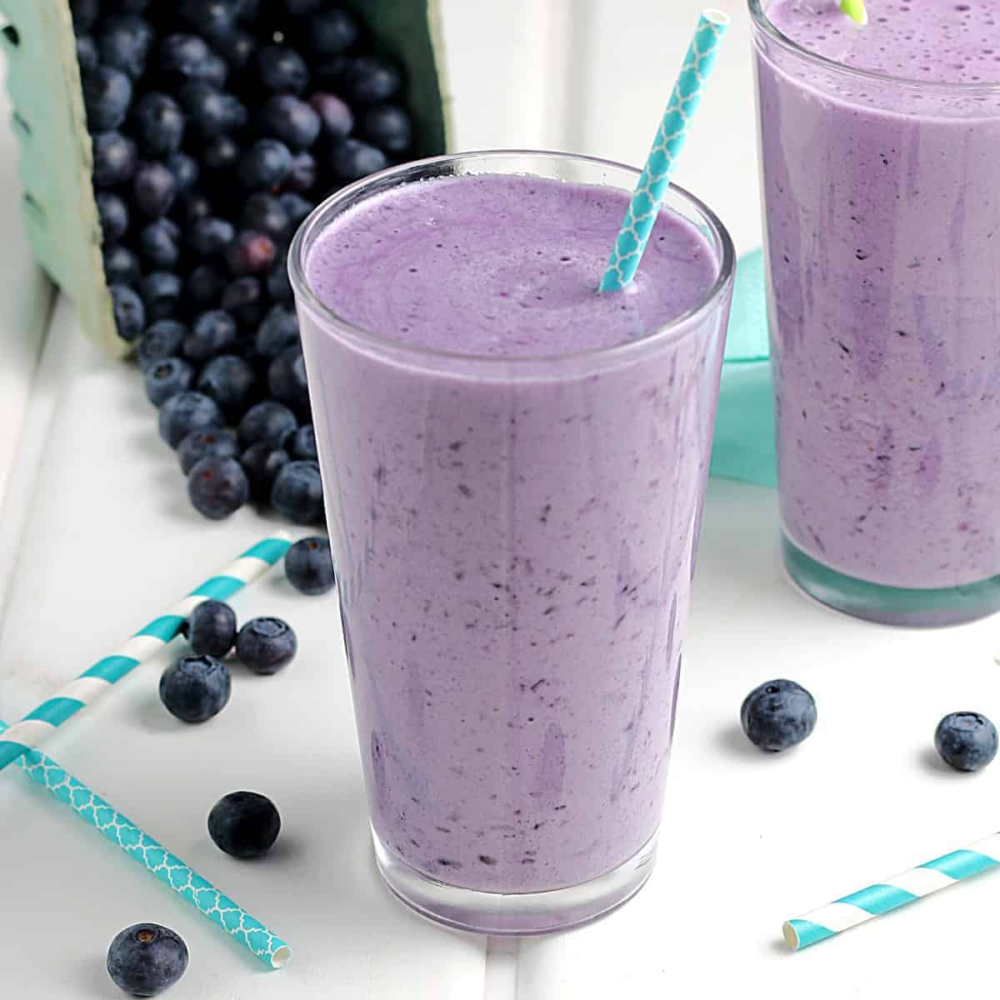

Protein Smoothie

This protein smoothie is a surefire way to kickstart your gains. It has all the essentials: protein powder, milk of choice, fruit, and spinach for micronutrient gains. Let's dive on in:
Ingredients
- 500ml milk of choice (milk, oatmilk, etc)
- 2 scoops protein powder of choice
- 1 banana
- 150g (or more) blueberries
- Big ol' handful of spinach
- Ice - optional for extra thicc'ness
- Peanut Butter - optional for extra cals
Steps
- Combine all ingredients in your blender, starting with least dense to most dense. Aka milk, protein powder, spinach, fruit, ice, etc.
- Add more ice or milk as req'd
- Drink and feel the gains pour into you